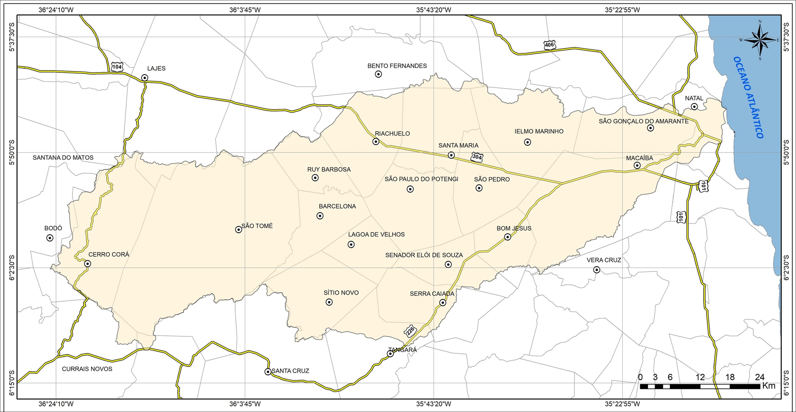

Mapa Bacia Hidrográfica do Rio Potengi
Clique em uma das cidades que fazem parte da Bacia Hidrográfica do Potengi para ver os seus dados pluviométricos

Clique em uma das cidades que fazem parte da Bacia Hidrográfica do Potengi para ver os seus dados pluviométricos
